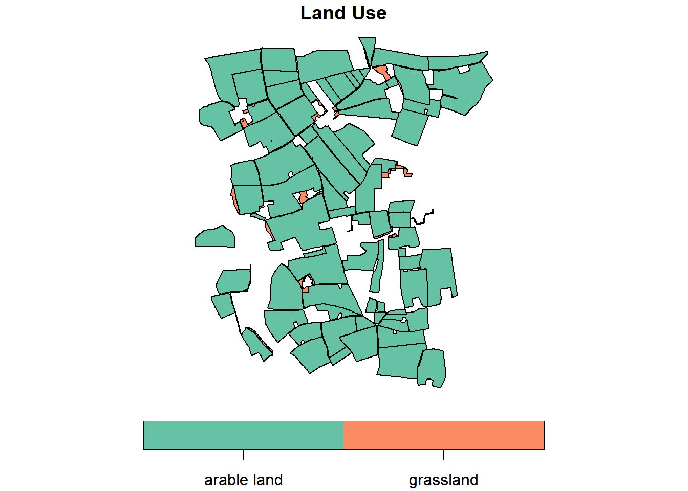
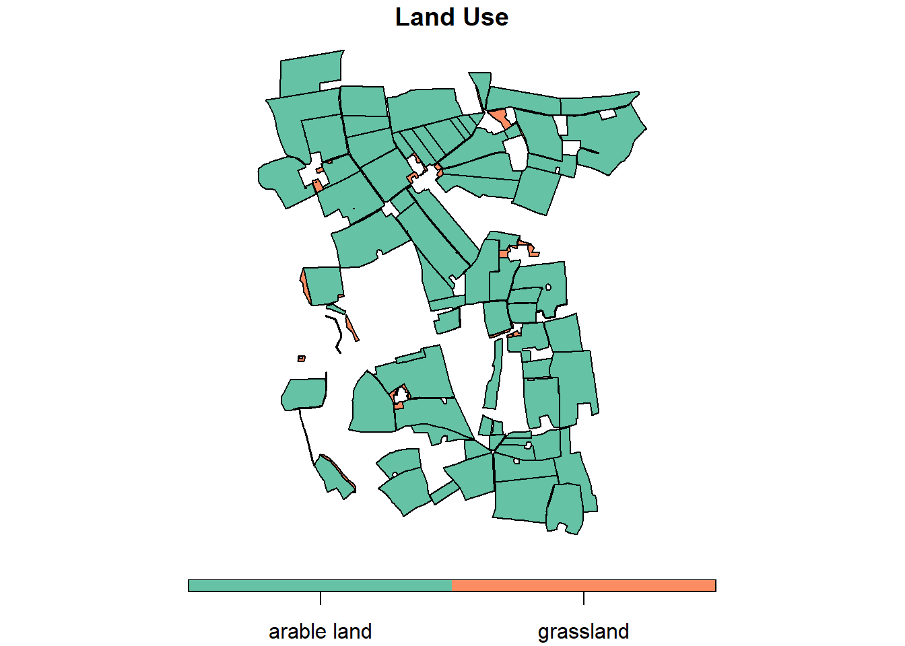
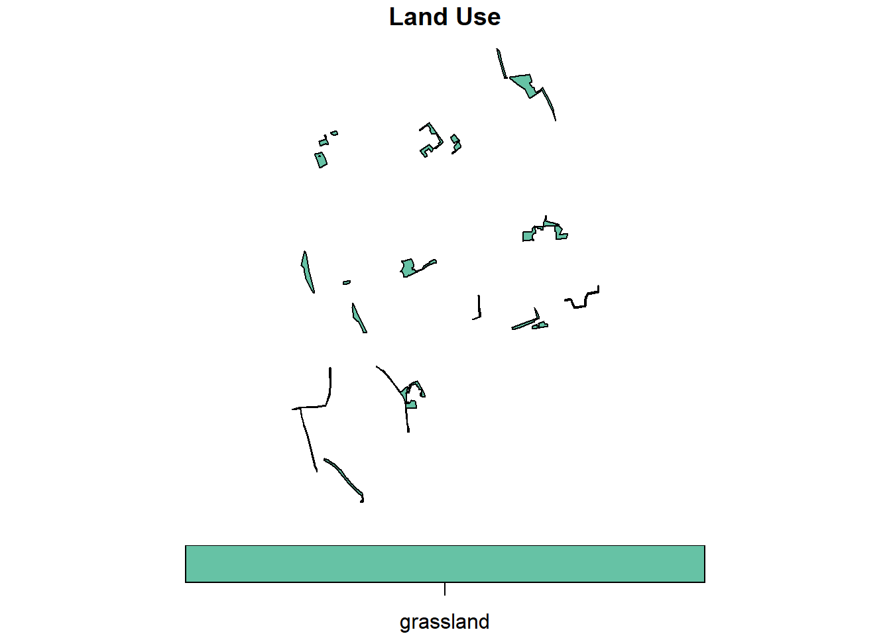
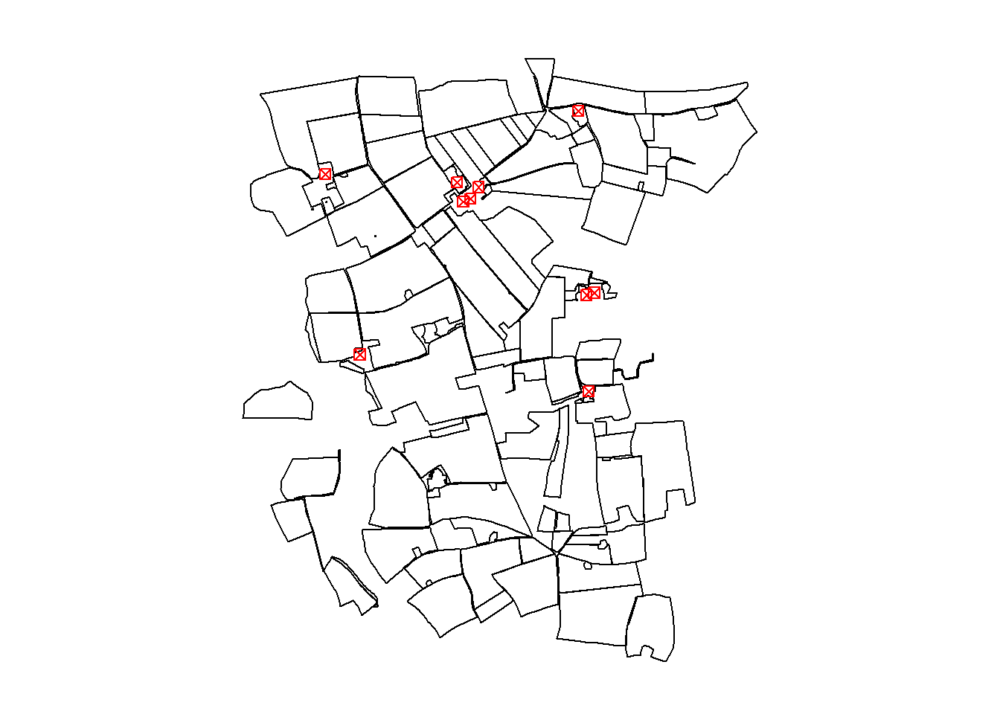
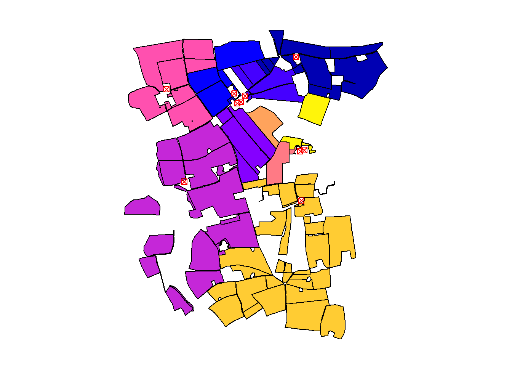
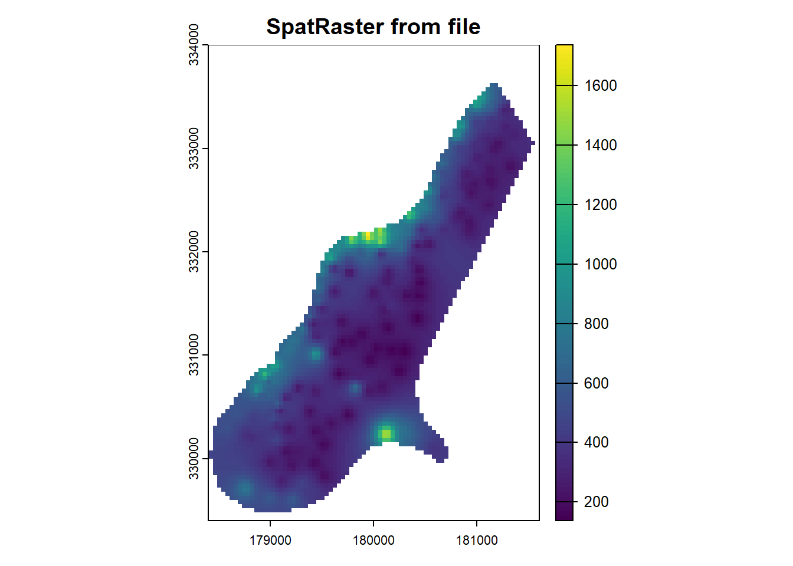
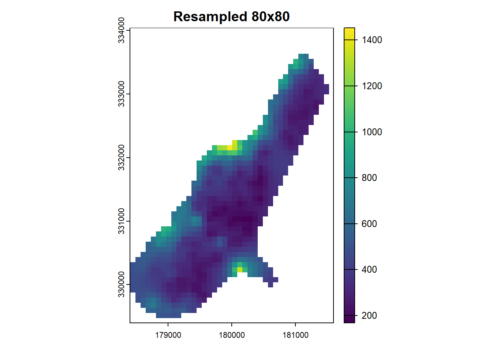
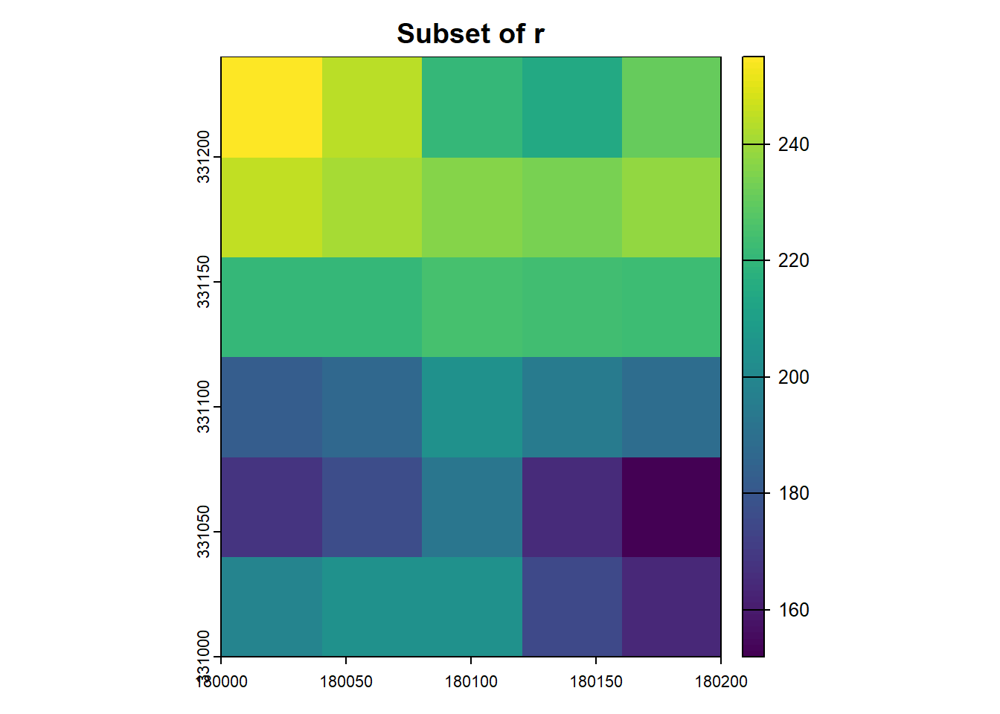
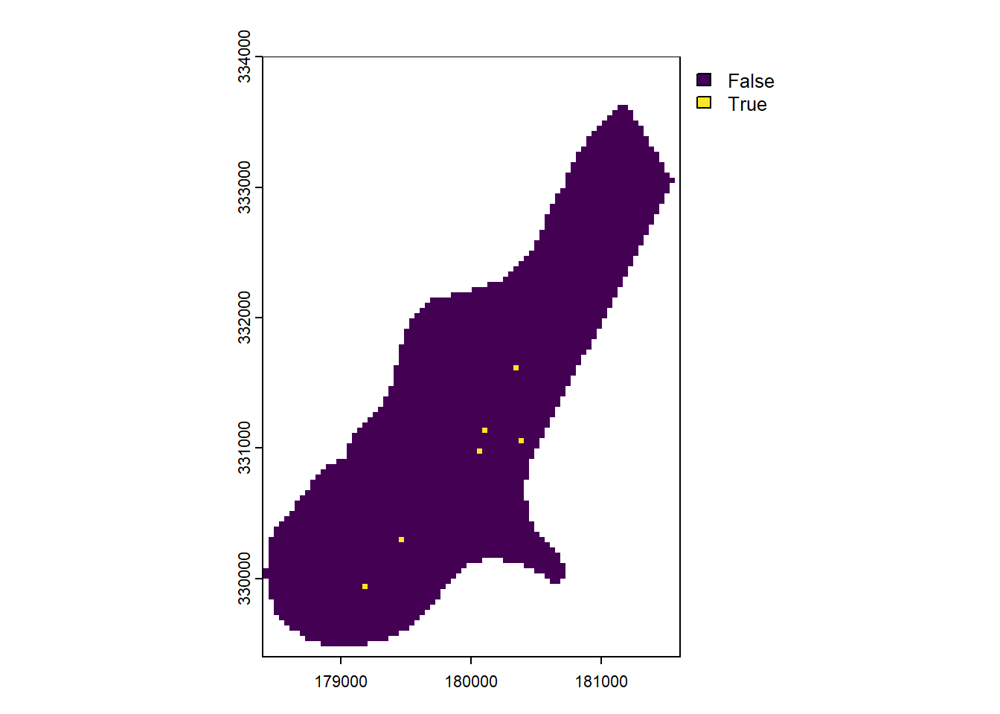

Lesson 9 Spatial Data Manipulation
In the previous lesson, you learned how to access data on a server via a REST API. The Open Geospatial Consortium (OGC) has adapted the REST API paradigm for geospatial applications. A variety of OGC API standards have been implemented to provide and utilize geospatial data on the web. An overview of the current implementation status can be found here.
In this lesson, we will utilize online data resources in workflows that involve data cleaning, spatial queries, and analyses. Additionally, you will learn to carry out basic raster manipulation operations on a sample raster dataset.
9.1 Data Acquisition
We will work with vector data to correctly identify agricultural land parcels in European Union countries. The Austrian Agricultural Agency (AMA) provides access to Austrian agricultural parcels through an OGC Rest API - Feature interface. The OGC API Features standard is the successor to the OGC Web Feature Service (WFS) specification.
The R syntax used to interact with OGC APIs is the same as described in the “Data API” section (see Lesson 8).
Before loading the data into an R script, examine the API’s contents. Visit the web service’s landing page and proceed to the collection page. There you will find an overview of the available layers.
Enter the following URL into your browser:
https://gis.lfrz.gv.at/ogcapi009501/ogc/features/collections/ogcapi009501:INVEKOS_feldstuecke_aktuell_polygon/items?f=json&limit=10This request returns the first ten features of the ogcapi009501:INVEKOS_feldstuecke_aktuell_polygon layer (agricultural land parcels as polygons) in GeoJSON format.
GeoJSON is a JSON-based standard for representing simple geographic features, along with their non-spatial attributes.
Upon inspecting the GeoJSON, you will find the coordinate vertices of the polygon features and attributes such as fs_flaeche_ha (parcel area in hectares) and fnar_bezeichnung (land use).
Use the bbox parameter to filter resources within a specific area:
https://gis.lfrz.gv.at/ogcapi009501/ogc/features/collections/ogcapi009501:INVEKOS_feldstuecke_aktuell_polygon/items?f=json&bbox=14,48,14.02,48.02 For a visual representation of the bounding box, enter the coordinates 14,48,14.02,48.02 into linestrings.com and click “Display box”.
To execute the request in R, use the following script:
library(httr2)
library(geojsonsf)
library(sf)
full_url <- "https://gis.lfrz.gv.at/ogcapi009501/ogc/features/collections/ogcapi009501:INVEKOS_feldstuecke_aktuell_polygon/items?f=json&bbox=14,48,14.02,48.02"
# Make the request and convert the response to an sf object
invekos <- httr2::request(full_url) %>% # Create request
httr2::req_perform() %>% # Execute request
httr2::resp_body_string() %>% # Extract JSON body as string
geojsonsf::geojson_sf() # Convert JSON string to sf objectThe above code retrieves 100 polygon features and stores them in an object named invekos.
9.2 Data Cleaning
Once the data is loaded into R, we can more closely examine its structure. The dplyr function glimpse, for instance, allows us to preview each column’s name and type:
## Rows: 100
## Columns: 15
## $ fart_id <dbl> 1783, 1783, 1783, 1783, 1783, 1783, 1783, 1783, 1783…
## $ gml_geom <chr> "[B@38da99b7", "[B@37b69cf4", "[B@1ae80b5b", "[B@51b…
## $ gml_length <dbl> 786, 581, 550, 780, 754, 1160, 1090, 382, 448, 1535,…
## $ geom_date_created <chr> "2022-10-01T04:48:30+02:00", "2022-10-01T05:16:44+02…
## $ log_pkey <dbl> 3, 3, 3, 3, 3, 3, 3, 3, 3, 3, 3, 3, 3, 3, 3, 3, 3, 3…
## $ fnar_code <chr> "A", "G", "A", "A", "A", "A", "A", "G", "A", "A", "A…
## $ gml_identifier <chr> "https://data.inspire.gv.at/0095/5f147bb9-7fe5-41ba-…
## $ fs_kennung <dbl> 103931764, 103931719, 103931731, 103931769, 10384647…
## $ geo_part_key <dbl> 14, 14, 14, 14, 14, 14, 14, 14, 14, 14, 14, 14, 14, …
## $ gml_id <chr> "AT.0095.5f147bb9-7fe5-41ba-a91e-0a3595c8335e.elu.Ex…
## $ inspire_id <chr> "https://data.inspire.gv.at/0095/5f147bb9-7fe5-41ba-…
## $ fnar_bezeichnung <chr> "ACKERLAND", "GRÜNLAND", "ACKERLAND", "ACKERLAND", "…
## $ fs_flaeche_ha <dbl> 2.54829187, 0.12070263, 0.52804037, 1.39019474, 1.26…
## $ geo_id <dbl> 12267790, 12286832, 12286835, 12267794, 12315820, 12…
## $ geometry <POLYGON [°]> POLYGON ((14.01765 48.01724..., POLYGON ((14…The abbreviation
dblstands fordouble, a data type that stores numbers with decimal points.
To create a subset of the invekos sf-object, use the following code:
invekos %>%
head(2) %>%
dplyr::select(fnar_bezeichnung, fs_flaeche_ha, geo_id, geometry) %>%
knitr::kable(., format="html")| fnar_bezeichnung | fs_flaeche_ha | geo_id | geometry |
|---|---|---|---|
| ACKERLAND | 2.5482919 | 12267790 | POLYGON ((14.01765 48.01724… |
| GRÜNLAND | 0.1207026 | 12286832 | POLYGON ((14.01353 48.02075… |
Field names and entries are in German. To rename them, use the base R function colnames():
# Subset of invekos object
invekos.sub <- invekos %>%
dplyr::select(fnar_bezeichnung, fs_flaeche_ha, geo_id, geometry)
# Renaming fields
colnames(invekos.sub)[1] <- "land_use"
colnames(invekos.sub)[2] <- "area_ha"Entries are renamed using dplyr’s mutate and case_when functions:
## [1] "ACKERLAND" "GRÜNLAND"# Renaming entries 'ACKERLAND' and 'GRÜNLAND'
invekos.sub <- dplyr::mutate(invekos.sub, land_use =
case_when(land_use == 'ACKERLAND' ~ 'arable land',
land_use == 'GRÜNLAND' ~ 'grassland', TRUE ~ 'Other'))
# Display result
invekos.sub %>%
head(2) %>%
knitr::kable(., format="html")| land_use | area_ha | geo_id | geometry |
|---|---|---|---|
| arable land | 2.5482919 | 12267790 | POLYGON ((14.01765 48.01724… |
| grassland | 0.1207026 | 12286832 | POLYGON ((14.01353 48.02075… |
For an initial visual impression, plot the sf-object using the base R plot() function:

By default, the plot() function generates a multi-panel plot, with one sub-plot for each field of the object. However, specifying invekos.sub[1] restricts the output to a single plot, specifically showcasing the land_use field. The function parameter key.pos = 1 aligns the legend below the map (1=below, 2=left, 3=above and 4=right). key.width defines the width of the legend.
Next, we can validate the geometry of sf polygons using st_is_valid:
## Mode TRUE
## logical 100The st_is_valid function checks the validity of each geometry, returning a logical vector. The summary confirms that all geometries in our dataset are valid. If any invalid geometries are detected, they can be corrected using the st_make_valid function.
Let’s closely investigate a polygon geometry with the code below, which creates a single polygon feature. The validity check flags an invalid geometry. Can you identify the problem?
# Coordinates for the polygon
coords <- matrix(c(-1, -1, 1, -1, 1, 1, 0, -1, -1, -1), ncol = 2, byrow = TRUE)
# List of coordinate matrices
list_of_coords <- list(coords)
# Constructing the polygon
polygon <- st_polygon(list_of_coords)
# Converting to an sf object
error_sf <- st_sf(geometry = st_sfc(polygon))
# Validity check
sf::st_is_valid(error_sf)## [1] FALSESee solution!
When plotted, the polygon reveals a sliver polygon, which is invalid due to its shape.

Another common cause of invalid geometries is self-intersection of lines.
Note: A valid polygon requires at least four coordinate points with the first and last points being identical. A polygon with only three points is considered to have an invalid geometry.
9.3 Vector operations
The structure of an sf object is similar to that of data frames, enabling attribute-based filtering operations using dplyr functions, as described in Lesson 7.
For example, to extract grassland parcels, the filter() function is used:
invekos.sub %>%
dplyr::filter(land_use=='grassland') %>%
{plot(.[1], main="Land Use", key.pos = 1, key.width = lcm(1.8))}
Note the use of curly brackets in the
plot()function. This is required because the dot notation (.) cannot directly index a piped value. For a deeper explanation, see this Stack Overflow discussion.
9.3.1 Geometrical operations
sf provides a range of geometric predicates such as st_within, st_contains, or st_crosses, with a complete list available here. While these are often used between pairs of simple feature geometry sets, they can also operate on a single sf object:
## Sparse geometry binary predicate list of length 100, where the
## predicate was `intersects'
## first 10 elements:
## 1: 1, 17, 62
## 2: 2, 4, 16
## 3: 3, 64, 83
## 4: 2, 4
## 5: 5
## 6: 6, 36
## 7: 7, 8, 66, 99
## 8: 7, 8
## 9: 9, 28, 30, 54
## 10: 10, 74This returns a sparse matrix revealing intersections within features of the same sf object invekos.sub, indicating possible topology errors. For correcting these errors, GIS software like QGIS is recommended as R’s capabilities for handling topology errors are less advanced.
9.3.2 Binary operations
Binary operations are essential for analyzing spatial relationships between different datasets. Here, we demonstrate this by creating an sf object representing farmsteads using data from the AMA Rest API service:
full_url <- "https://gis.lfrz.gv.at/ogcapi009501/ogc/features/collections/ogcapi009501:INVEKOS_hofstellen_aktuell_point/items?f=json&bbox=14,48,14.02,48.02"
farms <- httr2::request(full_url) %>% # Create request
httr2::req_perform() %>% # Execute request
httr2::resp_body_string() %>% # Extract JSON body as string
geojsonsf::geojson_sf() # JSON string to sf object
plot(invekos.sub[1], main=NULL, key.pos=NULL, reset = FALSE, col_graticule = "grey")
plot(farms[1], main=NULL, key.pos=NULL, pch = 7, col='red', add = TRUE, cex=1)
Note: The
plot()function is used sequentially to overlay farm points on top of the land parcel polygons. For advanced plotting techniques, refer to theplot()documentation.
We proceed to calculate the distances between farms and land parcels to determine proximity:
The st_distance function calculates the shortest distance matrix between the geometries of the two sf objects, with distances returned in meters.
Distances are computed in meters, which may seem unexpected since the reference system’s units are in degrees. To understand the underlying calculations, examine the coordinate reference system of the sf objects farms and invekos using sf::st_crs(). This will reveal that objects use geographic coordinates (WGS 84).
In this short exercise, we will take a closer look at the algorithm that is implemented in function st_distance.
Open the documentation of st_distance to find out how metric distances were derived from geographic coordinates.
See solution!
According to the documentation, greater circle distances are computed for geodetic coordinates. Greater circle distance calculations use by default spherical distances. Alternatively, distances can be computed based on an ellipsoidal model. See Algorithms for geodesics, Journal of Geodesy for more information.
When plotting the complete distance matrix dist_m, we see that column 1 contains the distances between the first feature (parcel 1) in sf-object invekos and the 10 farm features of sf-object farms. Accordingly, the matrix has 100 columns (one column for every parcel) and 10 rows (one row for every farm).
The following line returns the first column of the distance matrix as vector:
## Units: [m]
## [1] 255.9825 642.4693 547.6458 621.1653 1326.6061 1230.1068 510.2196
## [8] 587.8220 926.4913 492.0585To identify the farm that is located closest to parcel 1, we need to query the index of the minimum value in this vector:
## [1] 1The which function, a base R utility, identifies the indices of elements that satisfy a given condition. In the example, it returns the index of the smallest value within the vector dist_m[, 1]. Consequently, it indicates that farm 1 is the closest to parcel 1.
The demonstrated procedure for detecting closest farms can be executed for ever parcel in a for-loop. The number of the closest farm is appended to a vector named closest. This vector is in turn appended as a new column to sf-object invekos.sub. And invekos.sub is plotted together with farms:
closest <- c()
for (i in 1:100){
out <- which(dist_m[, i] == min(dist_m[, i]))
closest <- c(closest, out)
}
cbind(invekos.sub, closest) %>%
{plot(.[4], main=NULL, key.pos=NULL, reset = FALSE)}
plot(farms[1], main=NULL, key.pos=NULL, pch = 7, col='red', add = TRUE, cex=1)
The output map visualizes the closest farm to each agricultural parcel, highlighting the practical application of sf Geometrical operations.
This chapter focuses on logical matrix outputs from geometric operations. For operations generating new geometries, such as st_union, st_buffer, and st_centroid, see operations returning a geometry. For network operations on sf objects, consider using sfnetworks or the igraph package.
9.4 Raster operations
Having previously discussed the structure of SpatRaster Objects in Lesson 4 and the reading and writing of such objects in Lesson 8, we now turn our attention to raster manipulation operations like resampling and cropping.
For the following examples, we will utilize a sample dataset from the
terrapackage. You can download the sample data here).
9.4.1 Resampling
Resampling is crucial for working with raster datasets. It alters the spatial resolution, allowing you to align multiple rasters with different resolutions. Additionally, it adjusts the level of detail necessary for your analysis.
Let’s demonstrate resampling with the terra sample dataset:
library(terra)
r <- terra::rast("data/terra_sample.tif") # path may be different on your machine
plot(r, main='SpatRaster from file')
Before we change the raster resolution of SpatRaster Object, it is important to know the original resolution of the raster. You can use the res() function to check the original resolution:
## [1] 40 40For resampling, we’ll create a target raster by copying the original and setting a new resolution:
Although this operation clears the raster values, r2 can still be used as a target for resampling:
## [1] 80 80
The bilinear method is used for interpolating new values in r_resampled, with alternatives such as nearest or cubic. The choice of interpolation method for resampling raster data is a crucial consideration, discussed in further detail here.
9.4.2 Crop raster
Raster cropping allows you to select a specific area from a larger raster dataset for targeted analysis. Both SpatRaster and SpatExtent objects can be utilized for cropping operations.
To derive an extent from a SpatRaster, the ext function is used:
## SpatExtent : 178400, 181600, 329400, 334000 (xmin, xmax, ymin, ymax)The output format is <xmin, xmax, ymin, ymax>. Knowing this, we can define a cropping extent and apply it using the crop function:
crop_ext <- terra::ext(180000, 180200, 331000, 331250)
subset_r <- terra::crop(r, crop_ext)
plot(subset_r, main='Subset of r')
If the resulting cropped area doesn’t match expectations due to cell alignment, adjust the cropping extent or raster resolution as necessary.
9.4.3 Raster algebra
Terra provides functionality for algebraic operations on rasters, supporting standard arithmetic and logical operators, and functions like abs and round. For a full list, visit the terra algebra documentation.
Here’s how you can perform some simple operations:
# Add a constant value to each cell
s <- r + 10
# Calculate the square root of cell values
s <- sqrt(r)
# Generate a logical raster based on cell value equality
s1 <- s == 15
plot(s1)
Operators can be applied between SpatRaster objects with matching resolutions and origins. The result covers their spatial intersection.
You can also perform in-place replacements:
Here, all cells with the value 255 are replaced with 2550.
A broader range of vector and raster operations can be found in Chapter 5 - Geometry Operations, in the Book Geocomputation with R.
raster package, which is expected to be superseded by terra.